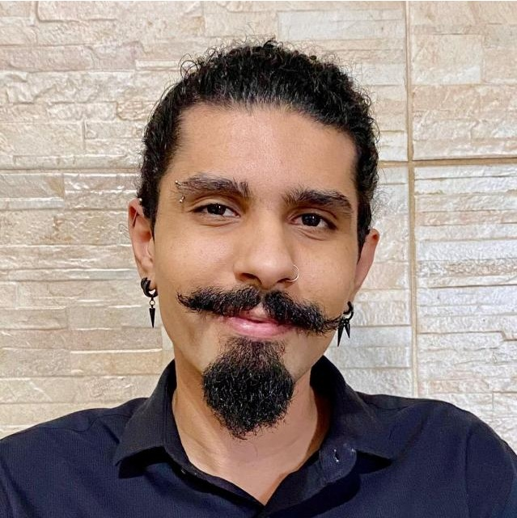

Desenvolvimento Humano
e Saúde Mental
Acolhimento, empatia e intervenções baseando-se na abordagem existencial-humanista, para promover qualidade de vida e bem estar.

Sobre Mim
Olá, sou Lucas Silva Rodrigues Jordão, 29 anos, psicólogo.
Minha atuação tem como pilar o acolhimento de diferentes demandas clínicas e o desenvolvimento de intervenções voltadas à promoção da saúde mental e qualidade de vida. Atualmente atuo na área clínica, mas possuo experiência na área social e organizacional, buscando sempre a excelência e o cuidado humano.
Minha Abordagem
Meu trabalho é fundamentado na Psicologia Existencial-Humanista, compreendendo cada pessoa como única, inserida em uma história, em relações e em um contexto de vida próprios. A psicoterapia é um espaço de encontro, acolhimento e diálogo, onde buscamos compreender o significado das experiências vividas, das angústias, dos conflitos e das escolhas.
Mais do que oferecer respostas prontas, meu objetivo é caminhar ao seu lado para que você possa desenvolver maior consciência de si mesmo, reconhecer seus recursos, construir novos sentidos para sua existência e enfrentar os desafios da vida com mais autenticidade e liberdade.
Ofereço um ambiente ético, seguro e livre de julgamentos, no qual adolescentes e adultos possam explorar suas vivências, emoções e possibilidades de transformação, respeitando sempre o seu tempo e sua singularidade.
Áreas de Atuação
Minhas Especialidades
Abordagens e áreas de atuação focadas no seu desenvolvimento pleno.
Psicologia Clínica
Atendimento psicológico de alta demanda, realização de psicoterapia breve e continuada com foco em qualidade de vida.
Psicologia Social
Acolhimento a famílias, visitas domiciliares, monitoramento do desenvolvimento infantil e planejamento de atividades lúdicas.
Recrutamento & Seleção
Entrevistas, avaliações psicológicas, processos admissionais e suporte ao desenvolvimento organizacional.
Desenvolvimento Humano
Capacitação de equipes, apoio técnico e desenvolvimento de atividades focadas no crescimento pessoal.
Trajetória e Formação
Ensino Superior em Psicologia
Faculdade Anhanguera Sumaré
CRP Ativo e RegularAtendimento Clínico
Nexo Sumaré
Psicoterapia breve e continuada, elaboração de registros técnicos e intervenções em saúde mental.
Supervisor & Estágio em Psicologia Social
Programa Criança Feliz
Capacitação de equipes, visitas domiciliares, acompanhamento infantil e apoio técnico.
Orientador Social
SCFV - Instituto Bem Querer
Criação e realização de atividades lúdicas para crianças de 7 a 13 anos.
Estágio em Psicologia Organizacional
Unimed Salto/Itu
Apoio em avaliações psicológicas, triagem e feedback estruturado a candidatos.
Dúvidas Frequentes
Respostas rápidas para facilitar o seu agendamento.
Ofereço o primeiro atendimento de 30 minutos gratuito, para conhecer o caso e para que você possa me conhecer. A primeira sessão é uma oportunidade para nos conhecermos. Você poderá expor os motivos que o(a) levaram a buscar a terapia e eu explicarei como funciona meu método de trabalho. É um momento de acolhimento e escuta sem julgamentos.
Normalmente, as sessões têm duração de 50 minutos e ocorrem semanalmente. A frequência pode ser ajustada conforme a evolução do processo terapêutico e a necessidade de cada paciente.
Atualmente realizo apenas atendimentos particulares. No entanto, forneço recibo para que você possa solicitar o reembolso diretamente com o seu plano de saúde (verifique as regras do seu convênio).
Os atendimentos podem ser realizados tanto na modalidade presencial (em Sumaré-SP) quanto online. Para o atendimento online, utilizo o Google Meet por ser uma plataforma acessível, segura e sigilosa, facilitando o acesso independente de onde você estiver.
Fale Comigo
Envie uma mensagem
Informações de Contato
-
-
-
Localização
Bairro Maria Antônia
Sumaré-SP, CEP: 13178-380